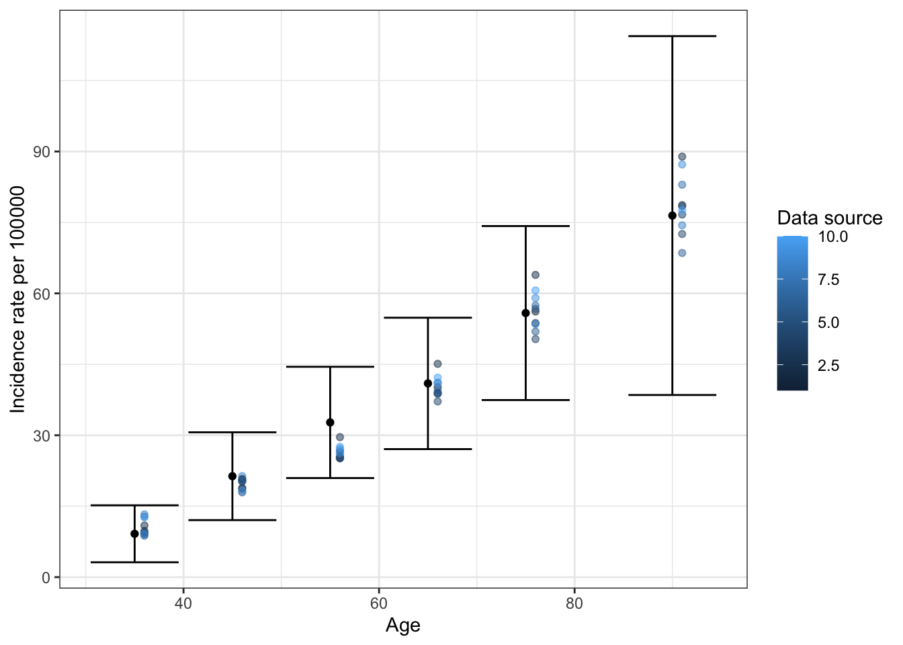

# Uncomment and run the below line once
# install.packages("tidyverse", "data.table", "lhs")Cancer microsimulation modeling tutorial: Discrete event simulation, calibration, evaluation of alternative strategies
Install packages
Model schema
The basic cancer model below shows relevant health states and possible transitions in cancer natural history. More complex model schemas exist, for example, having 4 cancer stages or a precancerous lesion stage between healthy and preclinical (for example, benign polyps can be a precursor to colorectal cancer).
We will simulate individuals as they transition between events, which can be health states or characteristics of states.
Some of these transition rates are known, but others have deep (unobserved) parameters that must be estimated through a process called calibration. For example, there is no way to directly estimate the transition rate from healthy to cancer onset. But we have data on the probability of survival after diagnosis, so we can use this data to model the transition from states C1 and C2 to Dc.

Load packages and functions
# Clear workspace
rm(list = ls())
# Options - do not display large numbers in scientific notation
options(scipen=999)
# Load packages
library(readxl)
library(data.table)
library(tidyverse)
library(lhs)
# Load functions
source("R/decision_model_functions.R")
source("R/epi_functions.R")Load input data
The following two datasets will be used for sampling time to event distributions.
# Load background mortality data for time to death from other causes
background_mortality <- read.csv('data/background_mortality.csv')
# Load survival from cancer diagnosis
relative_survival_cancer <- read.csv('data/relative_survival_cancer.csv')
# Calculate probability of dying in each year interval after diagnosis
relative_survival_cancer <- relative_survival_cancer %>%
mutate(pct_died = 1 - surv) %>%
group_by(stage) %>%
mutate(probs = c(diff(pct_died), 1 - max(pct_died)))Background mortality rates will be used to sample the time from birth to death from other causes. This data often comes from life tables compiled by demographers.
# Background mortality
plot_mort <- ggplot(background_mortality, aes(age, pct_alive)) +
geom_line() +
theme_minimal() +
coord_cartesian(ylim=c(0, 1)) +
labs(title = "Background mortality",
x = "Years from birth",
y = "Proportion alive")
plot_mortData on probability of survival as a function of time from diagnosis can come from cancer registry data or other sources that link cancer diagnoses and death records.
# Survival after diagnosis
plot_surv <- ggplot(relative_survival_cancer, aes(years_from_dx, surv, color = ifelse(stage == 1, "Early", "Late"))) +
geom_line() +
geom_point(alpha = 0.7) +
theme_minimal() +
coord_cartesian(ylim=c(0, 1)) +
labs(title = "Survival after diagnosis",
x = "Years from diagnosis",
y = "Proportion alive",
color = "Stage at diagnosis")
plot_surv
Now that we have introduced the model structure and loaded the data inputs, we will build a discrete-event simulation model, which will sample times between events from probability distributions.
For example, we can sample the time from the healthy state to the preclinical cancer state using an exponential distribution, which indicates a constant rate of transition. What are your thoughts on this?
# Sample from exponential distribution with rate 1 for 500 people
time_H_P <- rexp(500, rate = 1)
# Calculate survival curve (proportion of people who have not experienced event over time)
surv_H_P <- data.frame(
time = c(0, sort(time_H_P)),
prob = c(1 - seq(0, 500)/500),
label = 'Simulated'
)
# Note: this should equal 1 - the cumulative distribution function (CDF) of the exponential distribution. Let's check:
x_times <- seq(0, round(max(time_H_P)), 0.1) # Get the range of simulated times
cdf_H_P <- data.frame(
time = x_times,
prob = pexp(x_times, rate = 1, lower.tail = FALSE), # Get 1 minus the exponential CDF at those times
label = 'True CDF'
)
# Plot
ggplot(rbind(surv_H_P, cdf_H_P), aes(x = time, y = prob, color = label)) +
geom_line() +
labs(x = 'Time from birth',
y = 'Proportion healthy',
color = 'Data source') +
theme_minimal()
Or we can model it with a Weibull distribution, which is defined by a shape and scale parameter. A shape greater than 1 indicates that the hazard (instantaneous risk) of the event or transition increases over time. A shape equal to 1 makes the distribution exponential. A shape less than 1 means that the event rate decreases over time. Read more about the Weibull distribution here.
# Sample from Weibull distribution for 500 people
time_H_P <- rweibull(500, shape = 3, scale = 0.1)
# Calculate survival curve (proportion of people who have not experienced event over time)
surv_H_P <- data.frame(
time = c(0, sort(time_H_P)),
prob = c(1 - seq(0, 500)/500),
label = 'Simulated'
)
# Plot
ggplot(surv_H_P, aes(x = time, y = prob)) +
geom_line() +
labs(x = 'Time from birth',
y = 'Proportion healthy',
color = 'Data source') +
theme_minimal()
Set parameters
Now let’s decide on some general model parameters and figure out how we will model the different time-to-event variables.
Time from birth to death from other causes (time_H_Do): Empirical probability distribution from background mortality data, with a uniform random number correction to get non-integer values
Time from birth to early-stage preclinical cancer (time_H_P1): Weibull distribution with unknown shape and scale
Time from early-stage preclinical cancer to late-stage preclinical cancer (time_P1_P2): Exponential distribution with unknown rate
Time from early-stage preclinical cancer to early-stage clinical cancer (time_P1_C1): Exponential distribution with unknown rate
Time from late-stage preclinical cancer to late-stage clinical cancer (time_P2_C2): Exponential distribution with unknown rate
Time from early-stage clinical cancer to death from cancer: Empirical probability distribution from early-stage survival from diagnosis data, with a uniform random number correction to get non-integer values. Assume cured if the maximum number of years in the data gets sampled.
Time from late-stage clinical cancer to death from cancer: Empirical probability distribution from early-stage survival from diagnosis data, with a uniform random number correction to get non-integer values. Assume cured if the maximum number of years in the data gets sampled.
What do we do about the unknown parameters? Without any guidance, we might have to guess them, but luckily, we have a range of possible values for the unknown parameters from a prior study.
# Load deep parameter prior distributions as 'prior_map'
load("data/priors.RData")Now, we can set some model parameters, taking the average value of each of the prior distributions.
# Load modeling parameters
n_cohort <- 100000 # Number of people to simulate
seed <- 123 # Random seed
conf_level <- 0.95 # Confidence level for confidence intervals
incidence_rate_unit <- 100000 # Unit for incidence rate (rate per rate_unit)
# Parameters for time from birth to death from other causes
ages_H_Do <- background_mortality$age
prob_H_Do <- background_mortality$p_death
# Parameters for time from birth to cancer onset (Weibull distribution)
shape_H_P <- mean(prior_map$prior_min[prior_map$var_name == 'shape_H_P'],
prior_map$prior_max[prior_map$var_name == 'shape_H_P'])
scale_H_P <- mean(prior_map$prior_min[prior_map$var_name == 'scale_H_P'],
prior_map$prior_max[prior_map$var_name == 'scale_H_P'])
# Parameters for time from cancer onset to next stage or diagnosis (exponential distribution)
rate_P1_P2 <- mean(prior_map$prior_min[prior_map$var_name == 'rate_P1_P2'],
prior_map$prior_max[prior_map$var_name == 'rate_P1_P2'])
rate_P1_C1 <- mean(prior_map$prior_min[prior_map$var_name == 'rate_P1_C1'],
prior_map$prior_max[prior_map$var_name == 'rate_P1_C1'])
rate_P2_C2 <- mean(prior_map$prior_min[prior_map$var_name == 'rate_P2_C2'],
prior_map$prior_max[prior_map$var_name == 'rate_P2_C2'])
# Parameters for time from cancer diagnosis to death
ages_C1_Dc <- relative_survival_cancer$years_from_dx[relative_survival_cancer$stage == 1]
prob_C1_Dc <- relative_survival_cancer$surv[relative_survival_cancer$stage == 1]
ages_C2_Dc <- relative_survival_cancer$years_from_dx[relative_survival_cancer$stage == 2]
prob_C2_Dc <- relative_survival_cancer$years_from_dx[relative_survival_cancer$stage == 2]Run natural history model
Let’s run through the steps for modeling. The functions below are in ‘R/decision_model_functions.R’ if you want to take a closer look.
# Initialize matrix of patient data
m_cohort_base <- initialize_cohort(n_cohort)
# Generate baseline characteristics
simulate_baseline_data(m_cohort_base,
ages_H_Do,
prob_H_Do)
# Simulate time to cancer onset
simulate_cancer_onset(m_cohort_base,
shape_H_P,
scale_H_P)
# Simulate cancer stage progression and diagnosis
simulate_cancer_progression(m_cohort_base,
rate_P1_P2,
rate_P1_C1,
rate_P2_C2)
# Simulate time from cancer diagnosis to death
simulate_cancer_mortality(m_cohort_base,
ages_C1_Dc,
prob_C1_Dc,
ages_C2_Dc,
prob_C2_Dc)
# Calculate mortality outcomes
calc_mortality_outcomes(m_cohort_base)This process is compiled in the function ‘run_no_screening_model’ in ‘R/decision_model_functions.R’
Validation
How do we know if our parameters make sense? We can validate our model by checking if it produces outputs that are consistent with real-world data. Let’s load two datasets from population studies: age-specific preclinical cancer prevalence from screening studies and age-specific incidence of cancer without screening.
# Load incidence of symptom-detected cancer
true_incidence <- read.csv('data/incidence_cancer.csv')
# Load prevalence of preclinical cancer
true_prevalence <- read.csv('data/prevalence_preclinical_cancer.csv')Now let’s calculate some summary statistics from the simulated data using functions from “R/epi_functions.R” and see how well they match up to the real-world data.
First, let’s look at preclinical cancer prevalence.
# Get prevalence age categories
v_ages_prevalence <- c(true_prevalence$age_start[1], true_prevalence$age_end)
# Create censor variable for preclinical cancer prevalence screening, since people with diagnosed cancer and dead people will not be screened
m_cohort_base[, time_screen_censor := pmin(time_H_D, time_H_C, na.rm = TRUE)]
# Calculate preclinical cancer prevalence with default model
sim_prevalence <- calc_prevalence(m_time = m_cohort_base,
start_var = "time_H_P",
end_var = "time_H_C",
censor_var = "time_screen_censor",
v_ages = v_ages_prevalence,
conf_level = conf_level) %>%
dplyr::select(-c("person_years_cases", "person_years_total")) %>%
mutate(label = 'Simulated')
# Make dataframe for plotting
df_prevalence <- rbind(true_prevalence %>%
mutate(label = 'True'),
sim_prevalence) %>%
mutate(age_median = (age_start + age_end)/2)
# Plot
ggplot(df_prevalence, aes(x = age_median,
y = prevalence,
color = label)) +
geom_point() +
geom_errorbar(aes(x=age_median, ymin=ci_lb, ymax=ci_ub), alpha = 0.5) +
labs(x = 'Age',
y = 'Prevalence',
color = 'Data source') +
theme_bw()Now let’s look at cancer incidence.
# Get incidence age categories
v_ages_incidence <- c(true_incidence$age_start[1], true_incidence$age_end)
# Calculate cancer age-specific incidence
sim_incidence <- calc_incidence(m_time = m_cohort_base,
time_var = "time_H_C",
censor_var = "time_H_D",
v_ages = v_ages_incidence,
rate_unit = incidence_rate_unit) %>%
dplyr::select(-c("total_atrisk", "age_diff")) %>%
mutate(label = 'Simulated')
# Make dataframe for plotting
df_incidence <- rbind(true_incidence %>%
mutate(label = 'True'),
sim_incidence) %>%
mutate(age_median = (age_start + age_end)/2,
ci_lb = incidence - qnorm(conf_level + (1 - conf_level)/2) * se,
ci_ub = incidence + qnorm(conf_level + (1 - conf_level)/2) * se)
# Plot
ggplot(df_incidence, aes(x = age_median,
y = incidence,
color = label)) +
geom_point() +
geom_errorbar(aes(x=age_median, ymin=ci_lb, ymax=ci_ub), alpha = 0.5) +
labs(x = 'Age',
y = paste('Incidence rate per', incidence_rate_unit),
color = 'Data source') +
theme_bw()
Introduction
Calibration is the process of identifying parameter sets that are consistent with real-world evidence in terms of goodness-of-fit to calibration targets. Calibration methods include
Empirical
Latin Hypercube Sampling (LHS)
Maximizing the log-likelihood with Nelder-Mead optimization
Bayesian
Incremental mixture approximate Bayesian calibration (IMABC) (Rutter et al. 2019)
Bayesian Calibration with Artificial Neural Network (BayCANN) (Jalal, Trikalinos, and Alarid-Escudero 2021)
We will use LHS to try to guess well-fitting parameter sets. The prevalence and incidence data sets will serve as our calibration targets.
Sample parameter sets from prior distribution
# Set random seed
set.seed(seed)
# Set number of parameter sets to sample
n_samp <- 500
# Get number of parameters
n_param <- nrow(prior_map)
# Sample unit Latin Hypercube
m_lhs_unit <- randomLHS(n_samp, n_param)
# Rescale to min/max of each parameter
m_param_samp <- matrix(nrow = n_samp, ncol = n_param)
for (i in 1:n_param) {
m_param_samp[, i] <- qunif(m_lhs_unit[, i],
min = prior_map$prior_min[i],
max = prior_map$prior_max[i])
}
colnames(m_param_samp) <- prior_map$var_idCalculate calibration targets
Now, we will re-run the model for every parameter set and save the calibration outputs as vectors.
# Initialize matrix to store results
m_calib_outputs <- matrix(nrow = n_samp, ncol = length(true_prevalence$prevalence) + length(true_incidence$incidence))
# Loop over all parameter set samples
start_time <- Sys.time()
for (i in 1:nrow(m_param_samp)) {
# Run model with updated parameters
m_calib_times <- run_no_screening_model(n_cohort = n_cohort,
ages_H_Do = ages_H_Do,
prob_H_Do = prob_H_Do,
shape_H_P = m_param_samp[i, 1],
scale_H_P = m_param_samp[i, 2],
rate_P1_P2 = m_param_samp[i, 3],
rate_P1_C1 = m_param_samp[i, 4],
rate_P2_C2 = m_param_samp[i, 5],
ages_C1_Dc = ages_C1_Dc,
prob_C1_Dc = prob_C1_Dc,
ages_C2_Dc = ages_C2_Dc,
prob_C2_Dc = prob_C2_Dc,
seed = seed)
# Create censor variable for preclinical cancer prevalence screening, since people with diagnosed cancer and dead people will not be screened
m_calib_times[, time_screen_censor := pmin(time_H_D, time_H_C, na.rm = TRUE)]
# Calculate preclinical cancer prevalence
calib_prevalence <- calc_prevalence(m_time = m_calib_times,
start_var = "time_H_P",
end_var = "time_H_C",
censor_var = "time_screen_censor",
v_ages = v_ages_prevalence,
conf_level = conf_level)
# Calculate cancer age-specific incidence
calib_incidence <- calc_incidence(m_time = m_calib_times,
time_var = "time_H_C",
censor_var = "time_H_D",
v_ages = v_ages_incidence,
rate_unit = incidence_rate_unit)
# Save vector of results
m_calib_outputs[i, ] <- c(calib_prevalence$prevalence, calib_incidence$incidence)
}
end_time <- Sys.time()
print(end_time - start_time)Time difference of 43.99036 secsFind best-fitting parameters
We will calculate the goodness-of-fit between the simulated and true calibration targets using the log-likelihood and save the 100 parameter sets with the highest goodness-of-fit.
# Calculate binomial log likelihood for prevalence
m_prevalence <- m_calib_outputs[, 1:nrow(true_prevalence)]
m_ll_prevalence <- apply(m_prevalence, 1,
function(v_prev) dbinom(x = round(v_prev * true_prevalence$n_total),
size = round(true_prevalence$n_total),
prob = true_prevalence$prevalence,
log = TRUE))
# Calculate poisson log likelihood for incidence
m_incidence <- m_calib_outputs[, (nrow(true_prevalence) + 1):ncol(m_calib_outputs)]
m_ll_incidence <- apply(m_incidence, 1,
function(v_inc) dpois(x = round(v_inc / incidence_rate_unit * true_incidence$n_population),
lambda = true_incidence$incidence / incidence_rate_unit * true_incidence$n_population,
log = TRUE))
# Combine two log-likelihood matrices
m_ll <- rbind(m_ll_prevalence, m_ll_incidence)
# Sum log-likelihood for each parameter set
v_sum_ll <- colSums(m_ll)
# Rank log-likelihood from highest to lowest
v_rank_ll <- order(v_sum_ll, decreasing = TRUE)
# Get top parameter sets
top_k <- 10
m_param_best <- data.frame(m_param_samp[v_rank_ll[1:top_k], ])
m_prevalence_best <- data.frame(m_prevalence[v_rank_ll[1:top_k], ])
m_incidence_best <- data.frame(m_incidence[v_rank_ll[1:top_k], ])# Convert wide to long dataframe
colnames(m_prevalence_best) <- (true_prevalence$age_start + true_prevalence$age_end)/2
m_prevalence_best_long <- m_prevalence_best %>%
mutate(rank = 1:n()) %>%
pivot_longer(cols = -rank,
names_to = "age_median",
values_to = "prevalence") %>%
mutate(age_median = as.integer(age_median))
# Plot
ggplot(true_prevalence %>%
mutate(age_median = (age_start + age_end)/2), aes(x = age_median,
y = prevalence)) +
geom_point() +
geom_errorbar(aes(x=age_median, ymin=ci_lb, ymax=ci_ub)) +
geom_point(data = m_prevalence_best_long, aes(x = age_median+1, y = prevalence, color = rank), alpha = 0.5) +
labs(x = 'Age',
y = 'Prevalence',
color = 'Data source') +
theme_bw()# Convert wide to long dataframe
colnames(m_incidence_best) <- (true_incidence$age_start + true_incidence$age_end)/2
m_incidence_best_long <- m_incidence_best %>%
mutate(rank = v_rank_ll[v_rank_ll <= top_k]) %>%
pivot_longer(cols = -rank,
names_to = "age_median",
values_to = "incidence") %>%
mutate(age_median = as.integer(age_median))
# Plot
ggplot(true_incidence %>%
mutate(age_median = (age_start + age_end)/2,
ci_lb = incidence - qnorm(conf_level + (1 - conf_level)/2) * se,
ci_ub = incidence + qnorm(conf_level + (1 - conf_level)/2) * se)
, aes(x = age_median,
y = incidence)) +
geom_point() +
geom_errorbar(aes(x=age_median, ymin=ci_lb, ymax=ci_ub)) +
geom_point(data = m_incidence_best_long, aes(x = age_median+1, y = incidence, color = rank), alpha = 0.5) +
labs(x = 'Age',
y = paste('Incidence rate per', incidence_rate_unit),
color = 'Data source') +
theme_bw()
Plot parameters
A modeler in the real world will never have this information, but suppose an oracle provides you the true parameters. These are located in “the truth/true_param_map.RData”. Let’s look at how well empirical calibration was able to match the true parameters.
Latin Hypercube Sample distribution in gray, true parameters in red, uniform range of priors in blue
# Load true parameters --> 'true_params'
load('the truth/true_param_map.RData')
# Prepare data for histogram of parameters
colnames(m_param_best) <- prior_map$var_name
m_param_best_long <- m_param_best %>%
pivot_longer(everything())
# Plot IMABC parameters against true parameters and priors
plot_params <- ggplot(m_param_best_long, aes(value)) +
geom_histogram() +
geom_vline(data = true_params %>%
rename(name = var_name), aes(xintercept=var_value), color = 'red') +
geom_vline(data = prior_map %>%
rename(name = var_name), aes(xintercept=prior_min), color = 'blue') +
geom_vline(data = prior_map %>%
rename(name = var_name), aes(xintercept=prior_max), color = 'blue') +
facet_wrap(~name, scales = "free") +
ggtitle('IMABC')
plot_params`stat_bin()` using `bins = 30`. Pick better value with `binwidth`.With our model calibrated, we can now use it to evaluate the benefits and harms of a screening test that your roommate is developing as part of his PhD research. Maybe he’ll build a startup and get millions of dollars of seed funding (if the results look promising).
From preliminary studies, the test has a sensitivity of 70% for early stage cancer and 85% for late stage cancer. The specificity of the test is 80%. An invasive confirmatory follow up test is needed to diagnose the disease (assume that this test is perfect - i.e., 100% sensitivity and specificity). Because the follow up test is costly and invasive, it is not currently recommended as a screening test for average-risk adults without any symptoms. However, this invasive test is currently used to diagnose all cases of the cancer.
Your friend wants to know the tradeoffs of one-time screening at age 50 for anyone who has not been diagnosed with cancer compared to the current status quo of no screening. Specifically, he wants to know 1) the expected difference in life years and 2) the difference in number of invasive diagnostic tests between the two scenarios.
# Take best-fitting parameter set
v_param_best <- as.numeric(m_param_best[1, ])
# Run model without screening
m_no_screening <- run_no_screening_model(n_cohort = n_cohort,
ages_H_Do = ages_H_Do,
prob_H_Do = prob_H_Do,
shape_H_P = v_param_best[1],
scale_H_P = v_param_best[2],
rate_P1_P2 = v_param_best[3],
rate_P1_C1 = v_param_best[4],
rate_P2_C2 = v_param_best[5],
ages_C1_Dc = ages_C1_Dc,
prob_C1_Dc = prob_C1_Dc,
ages_C2_Dc = ages_C2_Dc,
prob_C2_Dc = prob_C2_Dc,
seed = seed)
# Create censor variable for preclinical cancer prevalence screening, since people with diagnosed cancer and dead people will not be screened
m_no_screening[, time_screen_censor := pmin(time_H_D, time_H_C, na.rm = TRUE)]
# Calculate preclinical cancer prevalence
no_screening_prevalence <- calc_prevalence(m_time = m_no_screening,
start_var = "time_H_P",
end_var = "time_H_C",
censor_var = "time_screen_censor",
v_ages = v_ages_prevalence,
conf_level = conf_level)
# Calculate cancer age-specific incidence
no_screening_incidence <- calc_incidence(m_time = m_no_screening,
time_var = "time_H_C",
censor_var = "time_H_D",
v_ages = v_ages_incidence,
rate_unit = incidence_rate_unit)Screening model: Assume same survival curves for early- and late-stage cancer, but do not allow survival to be worse than no-screening scenario.
# Set screening parameters
screen_age <- 50
screen_sens_early <- 0.7
screen_sens_late <- 0.85
screen_spec <- 0.8
# Make copy of no screening data
m_screening <- copy(m_no_screening)
# Flag if eligible for screening - have not died or been diagnosed with cancer before screening age
m_screening[, screen_elig := (time_H_D > screen_age) & (is.na(time_H_C) | time_H_C > screen_age)]
# Among screen eligible, flag if patient has cancer
m_screening[screen_elig == TRUE, screen_has_cancer := (time_H_P < screen_age)]
# Among screen eligible patients with cancer, flag stage at screening age
m_screening[screen_has_cancer == TRUE, screen_stage_dx := ifelse(time_H_P + time_P1_P2 < screen_age, 2, 1)]
# Sample probability of detection among people who have developed early-stage cancer (TP = true positive)
m_screening[screen_stage_dx == 1, screen_TP := rbinom(.N, size = 1, prob = screen_sens_early)]
# Sample probability of detection among people who have developed late-stage cancer (TP = true positive)
m_screening[screen_stage_dx == 2, screen_TP := rbinom(.N, size = 1, prob = screen_sens_late)]
# Update stage and age of detection for people who were screen-detected
m_screening[screen_TP == TRUE, stage_dx := screen_stage_dx]
m_screening[screen_TP == TRUE, time_H_C := screen_age]
# Sample survival among people with screen detected stage 1 cancer
m_screening[(screen_TP == TRUE) & (screen_stage_dx == 1), time_C_Dc_screen := sample(x = ages_C1_Dc,
size = .N,
replace = TRUE,
prob = prob_C1_Dc) + runif(.N)]
# Reset to cured if maximum age was sampled
m_screening[(screen_TP == TRUE) & (screen_stage_dx == 1) & (time_C_Dc_screen > max(ages_C1_Dc)), time_C_Dc_screen := Inf]
# Sample survival among people with screen detected stage 2 cancer
m_screening[(screen_TP == TRUE) & (screen_stage_dx == 2), time_C_Dc_screen := sample(x = ages_C2_Dc,
size = .N,
replace = TRUE,
prob = prob_C2_Dc) + runif(.N)]
# Reset to cured if maximum age was sampled
m_screening[(screen_TP == TRUE) & (screen_stage_dx == 2) & (time_C_Dc_screen > max(ages_C2_Dc)), time_C_Dc_screen := Inf]
# Do not allow death in screen-detected scenario to be earlier than death in non-screening scenario
m_screening[screen_TP == TRUE, time_C_Dc := pmax(time_C_Dc, time_C_Dc_screen)]
# Calculate time to death from cancer
m_screening[, time_H_Dc := time_H_C + time_C_Dc]
# Sample probability of false positive among people who do not have cancer (TN = true negative)
m_screening[screen_has_cancer == FALSE, screen_FP := rbinom(.N, size = 1, prob = 1 - screen_spec)]
# Calculate mortality outcomes
calc_mortality_outcomes(m_screening)Calculate outcomes
# Total life years gained in screen-eligible population due to screening per 1000 people
lyg <- (sum(m_screening[screen_elig == TRUE, time_H_D]) - sum(m_no_screening[m_screening$screen_elig == TRUE, time_H_D])) / nrow(m_screening) * 1000
print(paste('Life years gained per 1000 with screening:', round(lyg, 3)))[1] "Life years gained per 1000 with screening: 0.034"# Number of additional invasive follow-up tests per 1000 (true positives + false positives in screening scenario minus diagnosed cancer cases in no-screening scenario)
add_tests <- (nrow(m_screening[(screen_has_cancer == TRUE) & (screen_TP == TRUE),]) + nrow(m_screening[(screen_has_cancer == FALSE) & (screen_FP == TRUE),]) - nrow(m_no_screening[time_H_C <= time_H_D, ])) / nrow(m_screening) * 1000
print(paste('Additional follow-up tests per 1000 with screening:', round(add_tests, 3)))[1] "Additional follow-up tests per 1000 with screening: 173.36"References
Jalal, Hawre, Thomas A. Trikalinos, and Fernando Alarid-Escudero. 2021. “BayCANN: Streamlining Bayesian Calibration with Artificial Neural Network Metamodeling.” Frontiers in Physiology 12 (May). https://doi.org/10.3389/fphys.2021.662314.
Rutter, Carolyn M., Jonathan Ozik, Maria DeYoreo, and Nicholson Collier. 2019. “Microsimulation Model Calibration Using Incremental Mixture Approximate Bayesian Computation.” The Annals of Applied Statistics 13 (4). https://doi.org/10.1214/19-aoas1279.